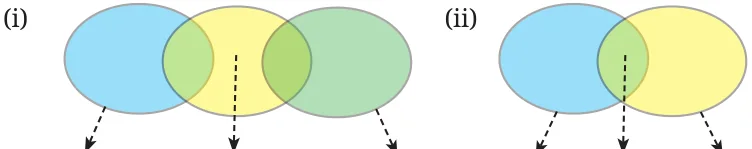
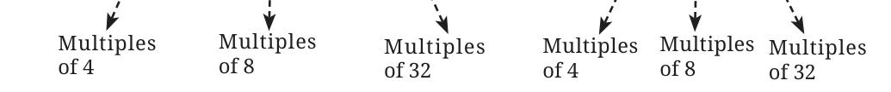
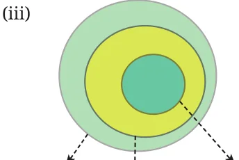
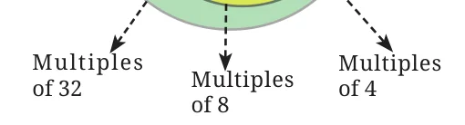
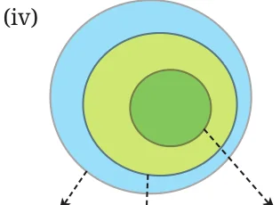
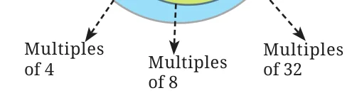

- If 31z5 is a multiple of 9, where \(z\) is a digit, what is the value of \(z\)?
Explain why there are two answers to this problem.
Ans. \(3 + 1 + z + 5 = 9 + z\)
So, \(z = 0\) or 9.
- "I take a number that leaves a remainder of 8 when divided by 12.
I take another number which is 4 short of a multiple of 12. Their sum will always be a multiple of 8", claims Snehal. Examine his claim and justify your conclusion.
Ans. Let the number be \(a = 12n + 8\) and \(b = 12m - 4\)
So, \(a + b = 12(n + m) + 4\)
\(= 12k + 4\)
\(a + b\) will not be a multiple of 8 always. For example, take \(k = 2\) and check.
- When is the sum of two multiples of 3, a multiple of 6 and when is it not? Explain the different possible cases, and generalise the pattern.
Ans. Let the two multiples of 3 be \(3m\) and \(3n\).
So, \(3m + 3n = 3(m + n)\). This will be a multiple of 6 only when \(m + n\) is a multiple of 2.
- Sreelatha says, "I have a number that is divisible by 9. If I reverse its digits, it will still be divisible by 9".
- Examine if her conjecture is true for any multiple of 9.
- Are any other digit shuffles possible such that the number formed is still a multiple of 9?
Ans.
- Yes, the conjecture is true for any multiple of 9. When digits are reversed, sum of digits remain the same.
- Yes, any shuffle of the digits is still a multiple of 9, because any rearrangement of the digits does not change the sum of the digits.
- If 48a23b is a multiple of 18, list all possible pairs of values for \(a\) and \(b\).
Ans. 48a23b is a multiple of 18 if it is multiple of both 2 and 9.
For any number multiple of 2, ones place must be an even number
So \(b = 0, 2, 4, 6, 8\)
For any number to be multiple of 9, sum of digits must be a multiple of 9.
So, \(4 + 8 + a + 2 + 3 + b = 17 + a + b\) must be multiple of 9.
For \(b = 0\)
\(a + b + 17 = a + 17\) is a multiple of 9
\(a + 17 \neq 9\) as \(a\) will be negative.
\(a + 17 = 18\),
So, \(a = 1\)
For \(b = 2\)
\(a + b + 17 = a + 19\) is a multiple of 9.
\(a + 19 \neq 9, 18\); as \(a\) will be negative.
So, \(a + 19 = 27\), \(a = 8\)
If \(a + 19 = 36\), then \(a = 17\). But \(a\) is a digit so \(a \neq 17\)
The possible pairs are (1, 0) (8, 2) (6, 4) (4, 6) and (2, 8)
- If 3p7q8 is divisible by 44, list all possible pairs of values for \(p\) and \(q\).
Ans. 3p7q8 is divisible by 44, means divisible by 11 and 4.
For divisiblility by 4, last two digits must be divisible by 4
So possible q8 are 08, 28, 48, 68, 88.
For divisibility by 11, difference between sum of the odd place digits and even place digits must be 0 or multiple of 11
Sum of odd place digits \(= 8 + 7 + 3 = 18\)
Sum of even place digits \(= p + q\)
Difference is \(18 - (p + q)\)
Let \(k = 18 - (p + q) = 0\) or a multiple of 11.
- if \(p + q = 18\) Not possible for \(q\) (0, 2, 4, 6, 8), since \(p\) is a digit.
- if \(18 - (p + q) = 11\) then \(p + q = 7\)
\((p = 7, q = 0)\) or \((q = 2, p = 5)\) or \((q = 4, p = 3)\) \((q = 6, p = 1)\)
- \(18 - (p + q)\) cannot be multiples of 11 further.
Hence the possible pairs for \(p\) and \(q\) are \((p = 7, q = 0)\), \((p = 5, q = 2)\), \((p = 3, q = 4)\) and \((p = 1, q = 6)\).
- Find three consecutive numbers such that the first number is a multiple of 2, the second number is a multiple of 3, and the third number is a multiple of 4.
Are there more such numbers? How often do they occur?
Ans. Let three consecutive numbers be \(n\), \(n + 1\), \(n + 2\). \(n\) is a multiple of 2. \((n + 1)\) is a multiple of 3 and \((n + 2)\) is a multiple of 4.
One set of three consecutive numbers are 2, 3, 4. There are more such numbers. LCM of 2, 3 and 4 is 12 but the numbers are consecutive. The pattern repeats after every 12. So, next set of 3 consecutive numbers is 14, 15 and 16.
- Write five multiples of 36 between 45,000 and 47,000.
Share your approach with the class.
Ans. We know that if a number is multiple of 9 and 4, it will be a multiple of 36.
For multiple of 4, last two digits must be multiples of 4. Such numbers are with (00, 04, 08, 12, …).
For multiples of 9, sum of digits must be multiple of 9.
So numbers are 45036, 45072, 45108, … .
Find the remaining numbers.
- The middle number in the sequence of 5 consecutive even numbers is \(5p\). Express the other four numbers in sequence in terms of \(p\).
Ans. The middle number in the sequence of 5 consecutive even numbers is \(5p\).
The other four numbers are \(5p - 4\), \(5p - 2\), \(5p + 2\) and \(5p + 4\).
- Write a 6-digit number that is divisible by 15, such that when the digits are reversed, it is divisible by 6.
Ans. We know that a number is divisible by 15 if it is divisible by 3 and 5.
Also it is divisible by 6 if it is divisible by 2 and 3.
If the 6-digit number is divisible by 15 then it ends with 0 and 5.
Suppose the 6-digit number is abcdef.
Since it is divisible by 15, so, \(f = 0\) or 5.
If \(f = 0\), then original number will be abcde0.
After reversing the digits it becomes 0edcba which is not a six digit number.
Thus, \(f = 5\)
Also, the new number after reversing the digits is divisible by 2.
So, \(a = 2, 4, 6, 8,\ (a \neq 0)\)
Now, possible numbers are —
For \(a = 2\), \(f = 5\), and sum of th digits is divisible by 3.
200025, 200055, 200085, 202005, … .
Find more such numbers.
- Deepak claims, "There are some multiples of 11 which, when doubled, are still multiples of 11. But other multiples of 11 don’t remain multiples of 11 when doubled". Examine if his conjecture is true; explain your conclusion.
Ans. Deepak’s conjecture is false.
Let \(n\) be a multiple of 11 so \(n = 11k\)
When doubled the result \(2n = 22k = 11 \times (2k)\)
- Determine whether the statements below are ‘Always True’, ‘Sometimes True’, or ‘Never True’. Explain your reasoning.
- The product of a multiple of 6 and a multiple of 3 is a multiple of 9.
- The sum of three consecutive even numbers will be divisible by 6.
- If abcdef is a multiple of 6, then badcef will be a multiple of 6.
- \(8(7b - 3) - 4(11b + 1)\) is a multiple of 12.
Ans.
- Always true.
- Always true.
- Always true.
- Never true.
- Choose any 3 numbers. When is their sum divisible by 3? Explore all possible cases and generalise.
Ans. Let \(n_{1}\), \(n_{2}\) and \(n_{3}\) be three numbers.
\(S = n_{1} + n_{2} + n_{3}\)
By dividing a number by 3, the only possible remainders are 0, 1 and 2.
Case I : Suppose the remainders are \(R_{1}\), \(R_{2}\) and \(R_{3}\). If \(R_{1} = 0\) and \(R_{2} \neq R_{3}\), then,
\(R_{1} + R_{2} + R_{3} = 0 + 1 + 2 = 3\) or \(0 + 2 + 1 = 3\)
So, the Sum(S) will be divisible by 3.
Case II: Suppose \(R_{1} = R_{2} = R_{3}\)
Then \(R_{1} + R_{2} + R_{3} = 3R_{1}\) or \(3R_{2}\) or \(3R_{3}\)
So, the Sum(S) will be divisible by 3 if the sum of the remainders is 0, 3 or 6.
- Is the product of two consecutive integers always multiple of 2?
Why? What about the product of three consecutive integers? Is it always a multiple of 6? Why or why not? What can you say about the product of 4 consecutive integers? What about the product of five consecutive integers?
Ans.
- Product of two consecutive integers—
Yes, product of two consecutive integers is always a multiple of 2, because if one is odd then the other will be even and multiple of even is even.
Product of three consecutive integers—
Yes, the product of three consecutive integers is always a multiple of 6. There is at least one multiple of 2 and one multiple of 3 in the product of three consecutive integers.
Product of 4 consecutive integers—
The product will be multiple of 24 because at least one of them is a multiple of 2, one is a multiple of 3, and one is a multiple of 4.
\((2 \times 3 \times 4 = 24)\).
Product of 5 consecutive integers.
The product must be a multiple of \(120\ (2 \times 3 \times 4 \times 5)\)
- Product of two consecutive integers—
- Solve the cryptarithms —
- \(EF \times E = GGG\)
- \(WOW \times 5 = MEOW\)
Ans.
- \(E = 3\), \(F = 7\), \(G = 1\)
- \(W = 5\), \(O = 7\), \(M = 2\), \(E = 8\)
- Which of the following Venn diagrams captures the relationship between the multiples of 4, 8, and 32?






Ans. (iv)